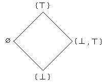
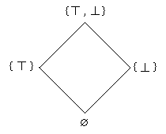

Many-Valued Logic
Many-valued logics are non-classical logics. They are similar to classical logic because they accept the principle of truth-functionality, namely, that the truth of a compound sentence is determined by the truth values of its component sentences (and so remains unaffected when one of its component sentences is replaced by another sentence with the same truth value). But they differ from classical logic by the fundamental fact that they do not restrict the number of truth values to only two: they allow for a larger set \(W\) of truth degrees.
Just as the notion of ‘possible worlds’ in the semantics of modal logic can be reinterpreted (e.g., as ‘moments of time’ in the semantics of tense logic or as ‘states’ in the semantics of dynamic logic), there does not exist a standard interpretation of the truth degrees. How they are to be understood depends on the actual field of application. It is general usage, however, to assume that there are two particular truth degrees, usually denoted by “0” and “1”. These particular truth degrees act, respectively, like the traditional truth values “falsum” and “verum” – but sometimes also like “absolutely false” and “absolutely true”, particularly in cases in which the traditional truth values of classical logic “split” into a series of truth degrees.
Many-valued logics treat their truth degrees as technical tools, and intend to choose them suitably for particular applications. It is a rather difficult philosophical problem to discuss the (possible, non-technical) nature of such “truth degrees” or “truth values”. The interested reader can consult the monograph Shramko/Wansing (2011) or the entry on truth values.
The formalized languages for systems of many-valued logic (MVL) follow the two standard patterns for propositional and predicate logic, respectively:
- there are propositional variables together with connectives and (possibly also) truth degree constants in the case of propositional languages,
- there are object variables together with predicate symbols, possibly also object constants and function symbols, as well as quantifiers, connectives, and (possibly also) truth degree constants in the case of first-order languages.
As usual in logic, these languages are the basis for semantically as well as syntactically founded systems of logic.
- 1. Semantics
- 2. Proof Theory
- 3. Systems of Many-Valued Logic
- 4. Applications of Many-Valued Logic
- 5. History of Many-Valued Logic
- Bibliography
- Academic Tools
- Other Internet Resources
- Related Entries
1. Semantics
There are three kinds of semantics for systems of many-valued logic.
We discuss these in turn.
1.1 Standard Logical Matrices
The most suitable way of defining a system \(\bS\) of many-valued logic is to fix the characteristic logical matrix for its language, i.e. to fix:
- the set of truth degrees,
- the truth degree functions which interpret the propositional connectives,
- the meaning of the truth degree constants,
- the semantical interpretation of the quantifiers,
and additionally,
- the designated truth degrees, which form a subset of the set of truth degrees and act as substitutes for the traditional truth value “verum”,
- and occasionally also anti-designated truth degrees, which form a subset of the set of truth degrees and act as substitutes for the traditional truth value “falsum”.
A well-formed formula \(A\) of a propositional language counts as valid under some valuation \(\alpha\) (which maps the set of propositional variables into the set of truth degrees) iff it has a designated truth degree under \(\alpha\). And \(A\) is logically valid or a tautology iff it is valid under all valuations.
In the case of a first-order language, such a well-formed formula \(A\) counts as valid under an interpretation \(\alpha\) of the language iff it has a designated truth degree under this interpretation and all assignments of objects from the universe of discourse of this interpretation to the object variables. \(A\) counts as logically valid iff it is valid under all interpretations.
Like in classical logic, such an interpretation has to provide
- a (non empty) universe of discourse,
- the meaning of the object constants of the language,
- the meaning of the predicate letters and the function symbols of the language.
A model of some set \(\Sigma\) of well-formed formulas is a valuation \(\alpha\) or an interpretation \(\alpha\) such that all \(A\) ∈ \(\Sigma\) are valid under \(\alpha\) . That \(\Sigma\) entails \(A\) means that each model of \(\Sigma\) is also a model of \(A\).
1.2 Algebraic Semantics
There is a second type of semantics for systems \(\bS\) of many-valued logic which is based on a whole characteristic class \(\bK\) of (similar) algebraic structures. Each such algebraic structure has to provide all the data which have to be provided by a characteristic logical matrix for the language of \(\bS\).
The notion of validity of a formula \(A\) with respect to an algebraic structure from \(\bK\) is defined as if this structure would form a logical matrix. And logical validity here means validity for all structures from the class \(\bK\).
The type of algebraic structures which form such a characteristic class \(\bK\) for some system \(\bS\) of MVL usually may come from two different sources. A first source may be determined by extralogical considerations which distinguish some such class of algebraic structures. If a system \(\bS\) of MVL is, however, determined syntactically or by a single characteristic matrix, such a class of algebraic structures often is determined by the (syntactical or semantical) Lindenbaum algebra of \(\bS\), and in such a case often plays also a crucial role within an algebraic completeness proof. The algebraic structures in \(\bK\) have a similar role for \(\bS\) as the Boolean algebras do for classical logic.
For particular systems of MVL one has e.g. the following characteristic classes of algebraic structures:
- for infinite valued Łukasiewicz logic the class of MV-algebras,
- for infinite valued Gödel logic the class of all Heyting algebras which additionally satisfy prelinearity \((x \rightarrow y) \cup (y \rightarrow x) = 1,\)
- for Hajek’s basic t-norm logic BL the class of all t-algebras, i.e. all those algebraic structures which are formed by the real unit interval together with a left-continuous t-norm \(T\) and their residuation operation \(I_{T}\) defined as \(I_{T}(x,y) = \sup \{z\mid T(x,z) \le y\}.\)
For the first two of these examples one has, historically, the logic determined by a characteristic matrix, and the corresponding class of algebraic structures determined later on. For the third example the situation is different: BL was designed to be the logic of all continuous t-norms, and from this extralogical approach the class of all divisible residuated lattices which satisfy prelinearity was found.
From a philosophical point of view, however, it usually would be preferable to have a semantic foundation for a system of MVL which uses a single characteristic logical matrix. But, from a formal point of view, both approaches are equally important, and the algebraic semantics turns out to be the more general approach.
1.3 Game Semantics
There are various ways in which logic and games can be related. Dialogical logic, e.g., offers a game-theoretic semantics for classical as well as for intuitionistic logic: a formula counts as valid if a proponent who states this formula has a winning strategy over possible attacks an opponent is allowed to realize.
In the context of the relationship between fuzzy sets and many-valued logic, an approach toward a game-oriented look at logical validity was offered by Robin Giles. Starting in 1975, he proposed in a series of papers Giles (1975,1976,1979), and again in Giles (1988), a general treatment of reasoning with vague predicates by means of a formal system based upon a convenient dialogue interpretation. He had already used this dialogue interpretation in other papers, such as Giles 1974, which deals with subjective belief and the foundations of physics. The main idea is to let “a sentence represent a belief by expressing it tangibly in the form of a bet”. The betting concerns the actual outcomes of dispersive experiments with different possible results of known probability. In this setting then a “sentence \(\psi\) is considered to follow from sentences \(\phi_{1},\ldots,\phi_{n}\) just when he who accepts the bets \(\phi_{1},\ldots,\phi_{n}\) can at the same time bet \(\psi\) without fear of loss”.
The (formal) language obtained in this way is closely related to Łukasiewicz’s infinite-valued logic \(\rL_{\infty}\): in fact the two systems coincide if one assigns to a sentence \(\phi\) the truth value \(1-\langle\phi\rangle\), with \(\langle\phi \rangle\) for the risk value of asserting \(\phi\). And he even adds the remark “that, with this dialogue interpretation, Łukasiewicz logic is exactly appropriate for the formulation of the ‘fuzzy set theory’ first described by L.A. Zadeh (1965); indeed, it is not too much to claim that \(\rL_{\infty}\) is related to fuzzy set theory exactly as classical logic is related to ordinary set theory”.
Different versions and generalizations of these dialogue games have been studied recently. Various aspects of these developments are discuss, e.g., in Fermüller (2008) and Fermüller/Roschger (2014). Such approaches are not only able to provide game semantics for e.g. Gödel logics and product logic. There are also bridges which connect such games with the design of sequent calculi for many-valued logics, cf. Fermüller/Metcalfe (2009).
There is also a further type of dialogue games related to \(m\)-valued Łukasiewicz logic: a proponent is asking for information, and the answering opponent is allowed to lie up to \(m\) times. Such “Ulam games with lies” have been introduced by Mundici (1992).
2. Proof Theory
The main types of logical calculi are all available for systems of MVL:
However, some of the above are available only for finitely valued systems. The present state of the art for a wide class of infinitely valued logics is presented in Metcalfe/Olivetti/Gabbay (2009).
2.1 Hilbert type calculi
These calculi are formed in the same way as the corresponding calculi for classical logic: some set of axioms is used together with a set of inference rules. The notion of derivation is the usual one.
2.2 Gentzen type sequent calculi
In addition to the usual types of sequent calculi, researchers have also recently started to discuss ‘hypersequent’ calculi for systems of MVL. Hypersequents are finite multisets, i.e. finite unordered lists of ordinary sequents.
For finitely valued systems, particularly \(m\)-valued ones, there are also sequent calculi which work with generalized sequents. In the \(m\)-valued case, these are sequences of length \(m\) of sets of formulas.
2.3 Tableau calculi
The tree structure of the tableaux remains the same in these calculi as in the tableau calculi for classical logic. The labels of the nodes become more general objects, namely, signed formulas. A signed formula is a pair, consisting of a sign and a well-formed formula. A sign is either a truth degree, or a set of truth degrees.
Tableau calculi with signed formulas are usually restricted to finite-valued systems of MVL, so that they can be dealt with in an effective way.
3. Systems of Many-Valued Logic
The main systems of MVL often come as families which comprise uniformly defined finite-valued as well as infinite-valued systems. Here is a list:
- 3.1 Łukasiewicz logics
- 3.2 Gödel logics
- 3.3 t-Norm based systems
- 3.4 Three-valued systems
- 3.5 Dunn/Belnap’s 4-valued system
- 3.6 Product systems
3.1 Łukasiewicz logics
The systems \(\rL_{m}\) and \(\rL_{\infty}\) are defined by the logical matrix which has either some finite set
\[ W_{m} = \{\tfrac{k}{m - 1} \mid 0 \le k \le m - 1\} \]of rationals within the real unit interval, or the whole unit interval
\[ W_{\infty} = [0,1] = \{x \in \Re \mid 0 \le x \le 1\} \]as the truth degree set. The degree 1 is the only designated truth degree.
The main connectives of these systems are a strong and a weak conjunction, \(\amp\) and \(\wedge\), respectively, given by the truth degree functions
\begin{align} u \amp v &= \max \{0, u + v-1\}, \\ u \wedge v &= \min \{u,v\}, \end{align}a negation connective \(\neg\) determined by
\[ \neg u = 1-u, \]and an implication connective \(\rightarrow\) with truth degree function
\[ u \rightarrow v = \min\{1, 1-u + v\}. \]Often, two disjunction connectives are also used. These are defined in terms of \(\amp\) and \(\wedge\), respectively, via the usual de Morgan laws using \(\neg\). For the first-order Łukasiewicz systems one adds two quantifiers \(\forall\), \(\exists\) in such a way that the truth degree of \(\forall xH(x)\) is the infimum of all the relevant truth degrees of \(H(x)\), and that the truth degree of \(\exists xH(x)\) is the supremum of all the relevant truth degrees of \(H(x)\).
3.2 Gödel logics
The systems \(\rG_{m}\) and \(\rG_{\infty}\) are defined by the logical matrix which has either some finite set
\[ W_{m} = \{\tfrac{k}{m - 1} \mid 0 \le k \le m - 1\} \]of rationals within the real unit interval, or the whole unit interval
\[ W_{\infty} = [0,1] = \{x \in \Re \mid 0 \le x \le 1\} \]as the truth degree set. The degree 1 is the only designated truth degree.
The main connectives of these systems are a conjunction \(\wedge\) and a disjunction \(\vee\) determined by the truth degree functions
\begin{align} u \wedge v &= \min \{u,v\}, \\ u \vee v &= \max \{u,v\}, \end{align}an implication connective \(\rightarrow\) with truth degree function
| \(u\rightarrow v\) | |
| \(u\le v\) | 1 |
| \(u\gt v\) | \(v\) |
and a negation connective \(\sim\) with truth degree function
| \({\sim}u\) | |
| \(u=0\) | 1 |
| \(u\ne 0\) | 0 |
For the first-order Gödel systems one adds two quantifiers \(\forall\), \(\exists\) in such a way that the truth degree of \(\forall xH(x)\) is the infimum of all the relevant truth degrees of \(H(x)\), and that the truth degree of \(\exists xH(x)\) is the supremum of all the relevant truth degrees of \(H(x)\).
3.3 t-Norm based systems
For infinite valued systems with truth degree set
\[ W_{\infty} = [0,1] = \{x \in \Re \mid 0 \le x \le 1\} \]the influence of fuzzy set theory since the mid-1980s initiated the study of a whole class of such systems of MVL.
These systems are basically determined by a (possibly non-idempotent) strong conjunction connective \(\amp_{\rT}\) which has as corresponding truth degree function a t-norm \(\rT\), i.e. a binary operation \(\rT\) in the unit interval which is associative, commutative, non-decreasing, and has the degree 1 as a neutral element:
\begin{align} & \rT(u,\rT(v,w)) = \rT(\rT(u,v),w), \\ & \rT(u,v) = \rT(v,u),\\ & u \le v \rightarrow \rT(u,w) \le \rT(v,w),\\ & \rT(u,1) = u. \end{align}For all those t-norms which have the sup-preservation property
\[ \rT(u, {\sup}_{i} v_{i}) = {\sup}_{i} \rT(u,v_{i}), \]there is a standard way to introduce a related implication connective \(\rightarrow_{\rT}\) with the truth degree function
\[ u \rightarrow_{\rT} v = \sup \{z \mid \rT(u,z) \le v\}. \]This implication connective is connected with the t-norm \(\rT\) by the crucial adjointness condition
\[ \rT(u,v) \le w \Leftrightarrow u \le (v \rightarrow_{\rT} w), \]which determines \(\rightarrow_{\rT}\) uniquely for each \(\rT\) with sup-preservation property.
The language is further enriched with a negation connective, \(-_{\rT}\), determined by the truth degree function
\[ -_{\rT} u = u \rightarrow_{\rT} 0. \]This forces the language to have also a truth degree constant \(\uO\) to denote the truth degree 0 because then \(-_{\rT}\) becomes a definable connective.
Usually one adds as two further connectives a (weak) conjunction \(\wedge\) and a disjunction \(\vee\) with truth degree functions.
\begin{align} u \wedge v &= \min \{u,v\}, \\ u \vee v &= \max \{u,v\}, \end{align}For t-norms which are continuous functions (in the standard sense of continuity for real functions of two variables) these additional connectives become even definable. Suitable definitions are
\begin{align} \min \{u,v\} &= \rT(u, (u \rightarrow_{\rT} v)) , \\ \max \{u,v\} &= \min \{ ((u \rightarrow_{\rT} v) \rightarrow_{\rT} v), ((v\rightarrow_{\rT} u) \rightarrow_{\rT} u) \}. \end{align}Particular cases of such t-norm related systems are the infinite valued Łukasiewicz and Gödel systems \(\rL_{\infty}\), \(\rG_{\infty}\), and also the product logic which has the usual arithmetic product as its basic t-norm.
From an analytical point of view, for a t-norm \(\rT\) their sup-preservation property is the left-continuity of this binary function \(\rT\), i.e. the property that each one of the unary functions \(\rT_{a}(x)=\rT(a,x)\) is left-continuous. And the continuity of such a t-norm T can be characterized through the algebraic divisibility condition
\[ u \amp_{\rT} (u\rightarrow_{\rT} v) = u \wedge v. \]The class of all t-norms is very large, and up to now not really well understood. Even for those t-norms which have the sup-preservation property the structural understanding is far from complete, but much better as for the general case: a discussion of the recent state of the art is given by Jenei (2004). Sufficiently well understood is only the further subclass of continuous t-norms: they are nicely composed out of isomorphic copies of the Łukasiewicz t-norm, the product t-norm, and the Gödel t-norm, i.e. the min-operation, as explained e.g. in Gottwald (2001).
Actually one is able to axiomatize t-norm based systems for some particular classes of t-norms. As a fundamental result, Hájek (1998) has given an axiomatization of the logic BL of all continuous t-norms. Besides the previously mentioned algebraic semantics this logic has, as conjectured by Hajek and proved in Cignoli/Esteva/Godo/Torrens (2000), as another algebraic semantics the class of all t-norm based structures whose t-norm is a continuous function. Based upon this work, Esteva and Godo (2001) conjectured an axiomatization for the logic MTL of all t-norms which have the sup-preservation property, and Jenei/Montagna (2002) proved that this really is an adequate axiomatization. And Esteva/Godo/Montagna (2004) offer a method to axiomatize the logic of each single continuous t-norm: they provide an algorithm which gives for each particular continuous t-norm \(\rT\) a finite list of axiom schemata which, if added to the logic BL of all continuous t-norms, yield an adequate axiomatization of the particular t-norm based logic for \(\rT\).
The axiomatization of further t-norm based systems, as well as the question for t-norm based quantifiers, are recent research problems. The main focus is given by the following two aspects which concern modifications of the expressive power of these t-norm based systems: (i) strengthenings of this expressibility by forming systems with additional negation operators or with multiple t-norm based conjunction operations; (ii) modifications of this expressibility e.g. by deleting the truth degree constant \(\uO\) from the language, but adding an implication connective to the basic vocabulary, and (iii) generalizations which modify the basic t-norms into non-commutative “pseudo-t-norms” and thus lead to logics with non-commutative conjunction connectives. Surveys for those developments had been given by Gottwald/Hájek (2005), Gottwald (2008), and Cintula/Hájek (2010).
A nearly complete presentation of the state of the art in 2011 is the monograph Cintula/Hájek/Noguera (2011). And the particular contributions of P. Hájek to these developments are honored in the book Montagna (2015).
3.4 Three-valued systems
3-valued systems seem to be particularly simple cases which offer intuitive interpretations of the truth degrees; these systems include only one additional degree besides the classical truth values.
The mathematician and logician Kleene used a third truth degree for “undefined” in the context of partial recursive functions. His connectives were the negation, the weak conjunction, and the weak disjunction of the 3-valued Łukasiewicz system together with a definable conjunction \(\wedge_{+}\) and a definable implication \(\rightarrow_{+}\) determined by truth degree functions with the following function tables (these latter have truth degree ½ iff one of their constituents has truth degree ½):
| \(\wedge_{+}\) | 0 | ½ | 1 |
| 0 | 0 | ½ | 0 |
| ½ | ½ | ½ | ½ |
| 1 | 0 | ½ | 1 |
| \(\rightarrow_{+}\) | 0 | ½ | 1 |
| 0 | 1 | ½ | 1 |
| ½ | ½ | ½ | ½ |
| 1 | 0 | ½ | 1 |
Here ½ is the third truth degree “undefined”. In this Kleene system, the degree 1 is the only designated truth degree.
Blau (1978) used a different system as an inherent logic of natural language. In Blau’s system, both degrees 1 and ½ are designated. Other interpretations of the third truth degree ½, for example as “senseless”, “undetermined”, or “paradoxical”, motivated the study of other 3-valued systems.
3.5 Dunn/Belnap’s 4-valued system
This particularly interesting system of MVL was the result of research on relevance logic, but it also has significance for computer science applications. Its truth degree set may be taken as
\[ W^* = \{\varnothing, \{\bot\}, \{\top\}, \{\bot, \top\}\}, \]and the truth degrees interpreted as indicating (e.g. with respect to a database query for some particular state of affairs) that there is
- no information concerning this state of affairs,
- information saying that the state of affairs fails,
- information saying that the state of affairs obtains,
- conflicting information saying that the state of affairs obtains as well as fails.
This set of truth degrees has two natural (lattice) orderings:
- a truth ordering which has \(\{\top\}\) on top of the
incomparable degrees \(\varnothing\), \(\{\bot , \top\}\), and has
\(\{\bot\}\) at the bottom; i.e.,

- an information (or: knowledge) ordering
which has \(\{\bot , \top\}\) on top of the incomparable degrees \(\{\bot
\}, \{\top\}\), and has \(\varnothing\) at the bottom; i.e.,

Given the inf and the sup under the truth ordering, there are truth degree functions for a conjunction and a disjunction connective. A negation is, in a natural way, determined by a truth degree function which exchanges the degrees \(\{\bot\}\) and \(\{\top\}\), and which leaves the degrees \(\{\bot, \top\}\) and \(\varnothing\) fixed.
Actually, there is no standard candidate for a implication connective, and the choice of the designated truth degrees depends on the intended applications:
- for computer science applications it is natural to have \(\{\top\}\) as the only designated degree,
- for applications to relevance logic the choice of \(\{\top\}\), \(\{\bot , \top\}\) as designated degrees proved to be adequate.
The choice of suitable entailment relations is still an open research topic.
This 4-valued system has an interesting interpretation in the context of information bases stored in a computer which was explained by Belnap (1977). A more recent generalization by Shramko/Wansing (2005) to knowledge bases in computer networks leads to 16-valued systems, which are e.g. also studied by Odintsov (2009).
These 16-valued systems are also of interest from a philosophical point of view and extensively presented in the monograph Shramko/Wansing (2011).
3.6 Product systems
The general problem of finding an intuitive understanding of the truth degrees occasionally has a nice solution: one can consider them as comprising different aspects of the evaluation of sentences. In such a case of, say, \(k\) different aspects the truth degrees may be chosen as \(k\)-tuples of values which evaluate the single aspects. (And these, e.g., may be standard truth values.)
The truth degree functions over such \(k\)-tuples additionally can be defined “componentwise” from truth degree (or: truth value) functions for the values of the single components. In this manner, \(k\) logical systems may be combined into one many-valued product system.
In this way, the truth degrees of Dunn/Belnap’s 4-valued system can be considered as evaluating two aspects of a state of affairs (SOA) related to a database:
- whether there is positive information about the truth of this SOA or not, and
- whether there is positive information about the falsity of this SOA or not.
Both aspects can use standard truth values for this evaluation.
In this case, the conjunction, disjunction, and negation of Dunn/Belnap’s 4-valued system are componentwise definable by conjunction, disjunction, or negation, respectively, of classical logic, i.e. this 4-valued system is a product of two copies of classical two-valued logic.
4. Applications of Many-Valued Logic
Many-valued logic was motivated in part by philosophical goals which were never achieved, and in part by formal considerations concerning functional completeness. In the earlier years of development, this caused some doubts about the usefulness of MVL. In the meantime, however, interesting applications were found in diverse fields. Some of these shall now be mentioned.
- 4.1 Applications to Linguistics
- 4.2 Applications to Logic
- 4.3 Applications to Philosophical Problems
- 4.4 Applications to Hardware Design
- 4.5 Applications to Artificial Intelligence
- 4.6 Applications to Mathematics
4.1 Applications to Linguistics
A challenging problem is the treatment of presuppositions in linguistics, i.e. of assumptions that are only implicit in a given sentence. So, for example, the sentence “The present king of Canada was born in Vienna” has the existential presupposition that there is a present king of Canada.
It is not a simple task to understand the propositional treatment of such sentences, e.g. to give criteria for forming their negation, or understanding the truth conditions of implications.
One type of solution for these problems refers to the use of many truth degrees, e.g. to product systems with ordered pairs as truth degrees: meaning that their components evaluate in parallel whether the presupposition is met, and whether the sentence is true or false. But 3-valued approaches have also been discussed.
Another type of ideas to use MVL tools in linguistics consists in approaches toward the modeling of natural language phenomena. Basic ideas and some applications are offered e.g. in Novák/Perfilieva/ Močkoř (1999) and Novák (2008).
4.2 Applications to Logic
A first type of application of systems of MVL to logic itself is to use them to gain a better understanding of other systems of logic. In this way the Gödel systems arose out of an approach to test whether intuitionistic logic may be understood as a finitely valued logic. The introduction of systems of MVL by Łukasiewicz (1920) was initially guided by the (finally unsuccessful) idea of understanding the notion of possibility, i.e. modal logic, in a 3-valued way.
A second type of application to logic is the merging of different types of logical systems, e.g. the formulation of systems with graded modalities. Melvin Fitting (1991/92) considers systems that define such modalities by merging modal and many-valued logic, with intended applications to problems of Artificial Intelligence.
A third type of application to logic is the modeling of partial predicates and truth value gaps. However, this is possible only in so far as these truth value gaps behave “truth functionally”, i.e. in so far as the behavior of the truth value gaps in compound sentences can be described by suitable truth functions. (This is not always the case, e.g. it is not the case in formulations which use supervaluations.)
4.3 Applications to Philosophical Problems
How to understand the meaning of “truth” is an old philosophical problem. A logical approach toward this problem consists in enriching a formalized language \(L\) with a truth predicate \(T\), to be applied to sentences of \(L\) – or, even better, to be applied to sentences of the extension \(L_{T}\) of \(L\) with the predicate \(T\).
Based upon this idea, a reasonable theory of such languages which contain truth predicates was developed in the mid-1930s by A. Tarski. One of the results was that such a language \(L_{T}\), which contains its own truth predicate \(T\) and has a certain richness in expressive power, is necessarily inconsistent.
Another approach toward such languages \(L_{T}\) which contain their own truth predicate \(T\) was offered by S. Kripke (1975) and is essentially based upon the idea of considering \(T\) as a partial predicate, i.e. as a predicate which has “truth value gaps”. In a case Kripke (1975) considers, these truth value gaps behave “truth functionally” and so can be treated like a third truth degree. Their propagation in compound sentences then becomes describable by suitable truth degree functions of three-valued systems. In Kripke’s (1975) approach this reference was to three-valued systems which S. C. Kleene (1938) had considered in the (mathematical) context of partial functions and predicates in recursion theory.
A second application of MVL inside philosophy is to the old paradoxes like the Sorites (heap) or the falakros (bald man). (See the entry Sorites paradox.) In the case of the Sorites, the paradox is as follows:
(i) One grain of sand is not a heap of sand. And (ii) adding one grain of sand to something which is not a heap does not turn it into a heap. Hence (iii) a single grain of sand can never turn into a heap of sand, no matter how many grains of sand are added to it.
Thus the true premise (i) gives a false conclusion (iii) via a sequence of inferences using (ii). A rather natural solution inside an extension of MVL with a graded notion of inference, often called fuzzy logic, is to take the notion of heap as a vague one, i.e. as a notion which may hold true of given objects only to some (truth) degree. Additionally it is suitable to consider premise (ii) as only partially true, however to a degree which is quite near to the maximal degree 1. Then each single inference step is of the form:
- (a)
- \(k\) grains of sand do not make a heap.
- (ii)
- Adding one grain of sand to \(k\) grains does not make \((k+1)\) grains into a heap.
- (b)
- \((k+1)\) grains of sand do not make a heap.
However, this inference has to involve truth degrees for the premises (a) and (ii), and has to provide a truth degree for the conclusion (b). The crucial idea for the modeling of this type of reasoning inside MVL is to make sure that the truth degree for (b) is smaller than the truth degree for (a) in case the truth degree for (ii) is smaller than the maximal one. In effect, then, the sentence \(n\) grains of sand do not make a heap tends toward being false for an increasing number \(n\) of grains.
4.4 Applications to Hardware Design
Classical propositional logic is used as a technical tool for the analysis and synthesis of some types of electrical circuits built up from “switches” with two stable states, i.e. voltage levels. A rather straightforward generalization allows the use of an \(m\)-valued logic to discuss circuits built from similar “switches” with \(m\) stable states. This whole field of application of many-valued logic is called many-valued (or even: fuzzy) switching. A good introduction is Epstein (1993).
4.5 Applications to Artificial Intelligence
AI is actually the most promising field of applications, which offers a series of different areas in which systems of MVL have been used.
A first area of application concerns vague notions and commonsense reasoning, e.g. in expert systems. Both topics are modeled via fuzzy sets and fuzzy logic, and these refer to suitable systems of MVL. Also, in databases and in knowledge-based systems one likes to store vague information.
A second area of application is strongly tied with this first one: the automatization of data and knowledge mining. Here clustering methods come into consideration; these refer via unsharp clusters to fuzzy sets and MVL. In this context one is also interested in automated theorem proving techniques for systems of MVL, as well as in methods of logic programming for systems of MVL. Part of this trend is the recent development of generalized description logics, so-called fuzzy description logics, which allow the inclusion of technical tools (truth degrees, connectives, graded predicates) from the field of MVL into – from the point of view of full first-order logics: rudimentary – systems of logic, so-called description logics, see Straccia (2001), Hájek (2005), Stoilos et al. (2008).
4.6 Applications to Mathematics
There are three main topics inside mathematics which are related to many-valued logic. The first one is the mathematical theory of fuzzy sets, and the mathematical analysis of “fuzzy”, or approximate reasoning. In both cases one refers to systems of MVL. The second topic has been approaches toward consistency proofs for set theory using a suitable system of MVL. And there is an – often only implicit – reference to the basic ideas of MVL in independence proofs (e.g. for systems of axioms) which often refer to logical matrices with more than two truth degrees. However, here MVL is more a purely technical tool because in these independence proofs one is not interested in an intuitive understanding of the truth degrees at all.
5. History of Many-Valued Logic
Many-valued logic as a separate subject was created by the Polish logician and philosopher Łukasiewicz (1920), and developed first in Poland. His first intention was to use a third, additional truth value for “possible”, and to model in this way the modalities “it is necessary that” and “it is possible that”. This intended application to modal logic did not materialize. The outcome of these investigations are, however, the Łukasiewicz systems, and a series of theoretical results concerning these systems.
Essentially parallel to the Łukasiewicz approach, the American mathematician Post (1921) introduced the basic idea of additional truth degrees, and applied it to problems of the representability of functions.
Later on, Gödel (1932) tried to understand intuitionistic logic in terms of many truth degrees. The outcome was the family of Gödel systems, and a result, namely, that intuitionistic logic does not have a characteristic logical matrix with only finitely many truth degrees. A few years later, Jaskowski (1936) constructed an infinite valued characteristic matrix for intuitionistic logic. It seems, however, that the truth degrees of this matrix do not have a nice and simple intuitive interpretation.
A philosophical application of 3-valued logic to the discussion of paradoxes was proposed by the Russian logician Bochvar (1938), and a mathematical one to partial function and relations by the American logician Kleene (1938). Much later Kleene’s connectives also became philosophically interesting as a technical tool to determine fixed points in the revision theory of truth initiated by Kripke (1975).
The 1950s saw (i) an analytical characterization of the class of truth degree functions definable in the infinite valued propositional Łukasiewicz system by McNaughton (1951), (ii) a completeness proof for the same system by Chang (1958, 1959) introducing the notion of MV-algebra and a more traditional one by Rose/Rosser (1958), as well as (iii) a completeness proof for the infinite valued propositional Gödel system by Dummett (1959). The 1950s also saw an approach of Skolem (1957) toward proving the consistency of set theory in the realm of infinite valued logic.
In the 1960s, Scarpellini (1962) made clear that the first-order infinite valued Łukasiewicz system is not (recursively) axiomatizable. Hay (1963) as well as Belluce/Chang (1963) proved that the addition of one infinitary inference rule leads to an axiomatization of \(\rL_{\infty}\). And Horn (1969) presented a completeness proof for first-order infinite valued Gödel logic. Besides these developments inside pure many-valued logic, Zadeh (1965) started an (application oriented) approach toward the formalization of vague notions by generalized set theoretic means, which soon was related by Goguen (1968/69) to philosophical applications, and which later on inspired also a lot of theoretical considerations inside MVL.
The 1970s mark a period of restricted activity in pure many-valued logic. There was, however, a lot of work in the closely related area of (computer science) applications of vague notions formalized as fuzzy sets, initiated e.g. by Zadeh (1975, 1979). And there was an important extension of MVL by a graded notion of inference and entailment in Pavelka (1979).
In the 1980s, fuzzy sets and their applications remained a hot topic that called for theoretical foundations by methods of many-valued logic. In addition, there were the first complexity results e.g. concerning the set of logically valid formulas in first-order infinite valued Łukasiewicz logic, by Ragaz (1983). Mundici (1986) started a deeper study of MV-algebras.
These trends have continued since the 1980s. Research has included applications of MVL to fuzzy set theory and their applications, detailed investigations of algebraic structures related to systems of MVL, the study of graded notions of entailment, and investigations into complexity issues for different problems in systems of MVL. This research was complemented by interesting work on proof theory, on automated theorem proving, by different applications in artificial intelligence matters, and by a detailed study of infinite valued systems based on t-norms – which now often are called (mathematical) fuzzy logics.
Bibliography
Monographs and Survey Papers
- Ackermann, R., 1967, An Introduction to Many-Valued Logics, London: Routledge and Kegan Paul.
- Bolc, L. and Borowik, P., 1992, Many-Valued Logics (1. Theoretical Foundations), Berlin: Springer.
- –––, 2003, Many-Valued Logics (2. Automated Reasoning and Practical Applications), Berlin: Springer.
- Cignoli, R., d’Ottaviano, I. and Mundici, D., 2000, Algebraic Foundations of Many-Valued Reasoning, Dordrecht: Kluwer.
- Cintula, P. and Hájek, P., 2010, Triangular norm based predicate fuzzy logics, Fuzzy Sets and Systems, 161 (3): 311–346.
- Cintula, P., Hájek, P. and Noguera Ch. (eds.), 2011, Handbook of Mathematical Fuzzy Logic (Studies in Logic, Volumes 37–38), College Publications: London.
- Epstein G., 1993, Multiple-Valued Logic Design, Bristol: Institute of Physics Publishing.
- Fitting, M. and Orlowska, E. (eds.), 2003, Beyond Two, Heidelberg: Physica Verlag.
- Gottwald, S., 1999, Many-valued logic and fuzzy set theory, in U. Höhle, S.E. Rodabaugh (eds.) Mathematics of Fuzzy Sets: Logic, Topology, and Measure Theory (The Handbooks of Fuzzy Sets Series), Boston: Kluwer, 5–89.
- –––, 2001, A Treatise on Many-Valued Logics (Studies in Logic and Computation, vol. 9), Baldock: Research Studies Press Ltd..
- –––, 2007, Many-valued logics, in D. Jacquette (ed.) Philosophy of Logic (Handbook of the Philosophy of Science Series), Amsterdam: North-Holland, 675–722.
- –––, 2008, Mathematical fuzzy logics, Bulletin Symbolic Logic, 14: 210–239.
- Gottwald, S. and Hájek, P., 2005, T-norm based mathematical fuzzy logics, in E.-P. Klement, R. Mesiar (eds.), Logical, Algebraic, Analytic, and Probabilistic Aspects of Triangular Norms, Dordrecht: Elsevier, 275–299.
- Hähnle, R., 1993, Automated Deduction in Multiple-Valued Logics, Oxford : Clarendon Press.
- –––, 1999, Tableaux for many-valued logics, in M. d’Agostino et al. (eds.) Handbook of Tableau Methods, Dordrecht: Kluwer, 529–580.
- –––, 2001, Advanced many-valued logics, in D. Gabbay, F. Guenthner (eds.), Handbook of Philosophical Logic (Volume 2), 2nd ed., Dordrecht: Kluwer, 297–395.
- Hájek, P., 1998, Metamathematics of Fuzzy Logic, Dordrecht: Kluwer.
- Karpenko, A.S., 1997, Mnogoznacnye Logiki (Logika i Kompjuter, vol. 4), Moscow: Nauka.
- Malinowski, G., 1993, Many-Valued Logics, Oxford: Clarendon Press.
- Metcalfe, G., Olivetti, N. and Gabbay, D., 2009, Proof Theory for Fuzzy Logics, New York: Springer.
- Montagna, F. (ed.), 2015, Petr Hájek on Mathematical Fuzzy Logic (Outstanding Contributions to Logic, vol. 6), Cham etc.:Springer.
- Novák, V., Perfilieva, I. and Močkoř, J., 1999, Mathematical Principles of Fuzzy Logic, Boston: Kluwer.
- Panti, G., 1998, Multi-valued logics, in P. Smets (ed.) Quantified Representation of Uncertainty and Imprecision (Handbook of Defeasible Reasoning and Uncertainty Management Systems, Vol. 1), Dordrecht: Kluwer, 25–74.
- Rescher, N., 1969, Many-Valued Logic, New York: McGraw Hill.
- Rine, D.C. (ed.), 1977, Computer Science and Multiple Valued Logic, Amsterdam : North-Holland [2nd rev. ed. 1984].
- Rosser, J.B. and Turquette, A.R., 1952, Many-Valued Logics, Amsterdam: North-Holland.
- Shramko, Y. and Wansing H., 2011, Truth and Falsehood. An Inquiry into Generalized Logical Values (Trends in Logic: Volume 36), Dordrecht etc.: Springer.
- Urquhart, A., 2001, Basic many-valued logic, in D. Gabbay, F. Guenthner (eds.), Handbook of Philosophical Logic, Vol. 2 (2d edition), Dordrecht: Kluwer, 249–295.
- Wojcicki, R. and Malinowski, G. (eds.), 1977, Selected Papers on Łukasiewicz Sentential Calculi, Wroclaw: Ossolineum.
- Wolf, R.G., 1977, A survey of many-valued logic (1966–1974), in J.M. Dunn, G. Epstein (eds.), Modern Uses of Multiple-Valued Logic, Dordrecht: Reidel, 167–323.
- Zinovev, A.A., 1963, Philosophical Problems of Many-Valued Logic, Dordrecht: Reidel.
Other Works Cited
- Belluce, L.P. and Chang, C.C., 1963, A weak completeness theorem for infinite valued first-order logic, Journal Symbolic Logic, 28: 43–50.
- Belnap, N.D., 1977, How a computer should think, in G. Ryle (ed.), Contemporary Aspects of Philosophy, Stockfield: Oriel Press, 30–56.
- –––, 1977, A useful four-valued logic, in J.M. Dunn, G. Epstein (eds.), Modern Uses of Multiple-Valued Logic, Dordrecht: Reidel, 8–37.
- Blau, U., 1978, Die dreiwertige Logik der Sprache: ihre Syntax, Semantik und Anwendung in der Sprachanalyse, Berlin: de Gruyter.
- Bochvar, D.A., 1938, Ob odnom trechznacnom iscislenii i ego primenenii k analizu paradoksov klassiceskogo rassirennogo funkcional’nogo iscislenija, Matematiceskij Sbornik, 4 (46): 287–308. [English translation: Bochvar, D.A., On a three-valued logical calculus and its application to the analysis of the paradoxes of the classical extended functional calculus, History and Philosophy of Logic, 2: 87–112.]
- Chang, C.C., 1958, Algebraic analysis of many valued logics, Transactions American Mathematical Society, 88: 476–490.
- –––, 1959, A new proof of the completeness of the Łukasiewicz axioms, Transactions American Mathematical Society, 93: 74–80.
- Cignoli, R., Esteva, F., Godo, L. and Torrens, A., 2000, Basic Fuzzy Logic is the logic of continuous t-norms and their residua, Soft Computing, 4: 106–112.
- Dummett, M., 1959, A propositional calculus with denumerable matrix, Journal Symbolic Logic, 24: 97–106.
- Dunn, J.M., 1976, Intuitive semantics for first-degree entailments and ‘coupled trees’, Philosophical Studies, 29: 149–168.
- Esteva, F. and Godo, L., 2001, Monoidal t-norm based logic: towards a logic for left-continuous t-norms, Fuzzy Sets and Systems, 124: 271–288.
- Esteva, F., Godo, L. and Montagna, F., 2004, Equational characterization of the subvarieties of BL generated by t-norm algebras, Studia Logica, 76: 161–200.
- Fermüller, C.G., 2008, Dialogue games for many-valued logics–an overview, Studia Logica, 90: 43–68.
- Fermüller, C.G. and Metcalfe, G., 2009, Giles’s game and the proof theory of Łukasiewicz logic, Studia Logica, 92: 27–61.
- Fermüller, C.G. and Roschger, C., 2014, From games to truth functions: a generalization of Giles’s game, Studia Logica, 102: 389–410.
- Fitting, M.C., 1991/92, Many-valued modal logics (I,II), Fundamenta Informaticae, 15: 235–254; 17: 55–73.
- Giles, R., 1974, A non-classical logic for physics, Studia Logica, 33: 397–415.
- –––, 1975. Łukasiewicz logic and fuzzy set theory. In: Proceedings 1975 Internat. Symposium Multiple-Valued Logic (Indiana Univ., Bloomington/IN)}, Long Beach/CA: IEEE Computer Soc., 197–211.
- –––, 1976, Łukasiewicz logic and fuzzy set theory. Internat. Journ. Man-Machine Studies, 8: 313–327.
- –––, 1979, A formal system for fuzzy reasoning. Fuzzy Sets and Systems, 2: 233–257.
- Giles, R., 1988, The concept of grade of membership. Fuzzy Sets and Systems, 25: 297–323.
- Gödel, K., 1932, Zum intuitionistischen Aussagenkalkül, Anzeiger Akademie der Wissenschaften Wien (Math.-naturwiss. Klasse), 69: 65–66; – reprinted: (1933), Ergebnisse eines mathematischen Kolloquiums, 4: 40.
- Goguen, J.A., 1968–69, The logic of inexact concepts, Synthese, 19: 325–373.
- Hájek, P., 2005, Making fuzzy description logic more general, Fuzzy Sets and Systems, 154: 1–15.
- Hájek, P. and Zach, R., 1994, Review of Many-Valued Logics 1: Theoretical Foundations, by Leonard Bolc and Piotr Borowik, Journal of Applied Non-Classical Logics, 4 (2): 215–220.
- Hay, L.S., 1963, Axiomatization of the infinite-valued predicate calculus, Journal Symbolic Logic, 28: 77–86.
- Jaskowski, S., 1936, Recherches sur le système de la logique intuitioniste, in Actes du Congrès Internationale de Philosophie Scientifique 1936, vol. 6, Paris, 58–61. [English translation: Studia Logica, 34 (1975): 117–120.]
- Jenei, S., 2004, How to construct left-continuous triangular norms – state of the art, Fuzzy Sets and Systems, 143: 27–45.
- Jenei, S. and Montagna, F., 2002, A proof of standard completeness of Esteva and Godo’s logic MTL, Studia Logica, 70: 183–192.
- Kleene, S.C., 1938, On notation for ordinal numbers, Journal Symbolic Logic, 3: 150–155.
- Kripke, S.A., 1975, Outline of a theory of truth, Journal of Philosophy, 72: 690–716.
- Łukasiewicz, J., 1920, O logice trojwartosciowej, Ruch Filozoficny, 5: 170–171. [English translation in: Łukasiewicz (1970).]
- –––, 1970, Selected Works, L. Borkowski (ed.), Amsterdam: North-Holland and Warsaw: PWN.
- McNaughton, R., 1951, A theorem about infinite-valued sentential logic, Journal Symbolic Logic, 16: 1–13.
- Mundici, D., 1986, Interpretation of AF C*-algebras in Łukasiewicz sentential calculus, J. Functional Analysis, 65: 15–63.
- –––, 1992, The logic of Ulam’s game with lies, in: C. Bicchieri and M.L. dalla Chiara (eds.) Knowledge, belief, and strategic interaction, Cambridge: Cambridge Univ. Press, 275–284.
- Novák, V., 2008, A formal theory of intermediate quantifiers, Fuzzy Sets and Systems, 159: 1229–1246.
- Odintsov, S.P., 2009, On axiomatizing Shramko-Wansing’s Logic, Studia Logica, 91: 407–428.
- Post, E. L., 1920, Determination of all closed systems of truth tables, Bulletin American Mathematical Society, 26: 437.
- –––, 1921, Introduction to a general theory of elementary propositions, American Journal Mathematics, 43: 163–185.
- Ragaz, M., 1983, Die Unentscheidbarkeit der einstelligen unendlichwertigen Prädikatenlogik, Archiv mathematische Logik Grundlagenforschung, 23: 129–139.
- Rose, A. and Rosser, J.B., 1958, Fragments of many-valued statement calculi, Transactions American Mathematical Society, 87: 1–53.
- Scarpellini, B., 1962, Die Nichtaxiomatisierbarkeit des unendlichwertigen Prädikatenkalküls von Łukasiewicz, Journal Symbolic Logic, 27: 159–170.
- Shramko, Y. and Wansing H., 2005, Some useful 16-valued logics. How a computer network should think, Journal Philosophical Logic, 34: 121–153.
- Skolem, Th., 1957, Bemerkungen zum Komprehensionsaxiom, Zeitschrift mathematische Logik Grundlagen Mathematik, 3: 1–17.
- Stoilos, G. Stamou, G., Pan, J.Z., Tzouvaras, V., and Horrocks, I., 2007, Reasoning with very expressive fuzzy description logics, J. Artificial Intelligence Res, 30: 273–320.
- Straccia, U. (2001), Reasoning within fuzzy description logics, J. Artificial Intelligence Res, 14: 137–166.
- White, R.B., 1979, The consistency of the axiom of comprehension in the infinite-valued predicate logic of Łukasiewicz, J. Philosophical Logic, 8: 509–534.
- Wronski, A., 1987, Remarks on a survey article on many valued logic by A. Urquhart, Studia Logica, 46: 275–278.
- Zadeh, L.A., 1965, Fuzzy sets, Information and Control, 8: 338–353.
- –––, 1975, Fuzzy logic and approximate reasoning, Synthese, 30: 407–428.
- –––, 1978, Fuzzy sets as a basis for a theory of possibility, Fuzzy Sets and Systems, 1: 3–28.
- –––, 1979, A theory of approximate reasoning, in J.E. Hayes, D. Michie, L.I. Mikulich (eds.), Machine Intelligence 9. New York: Halstead Press, 149–194.
Academic Tools
How to cite this entry. Preview the PDF version of this entry at the Friends of the SEP Society. Look up topics and thinkers related to this entry at the Internet Philosophy Ontology Project (InPhO). Enhanced bibliography for this entry at PhilPapers, with links to its database.


Other Internet Resources
- IEEE CS Technical Committee on Multiple-Valued Logic, Yutaka Hata, bulletin editor.
- Journal of Multiple-Valued Logic and Soft Computing, Dan A. Simovici and Ivan Stojmenovic, managing editors.